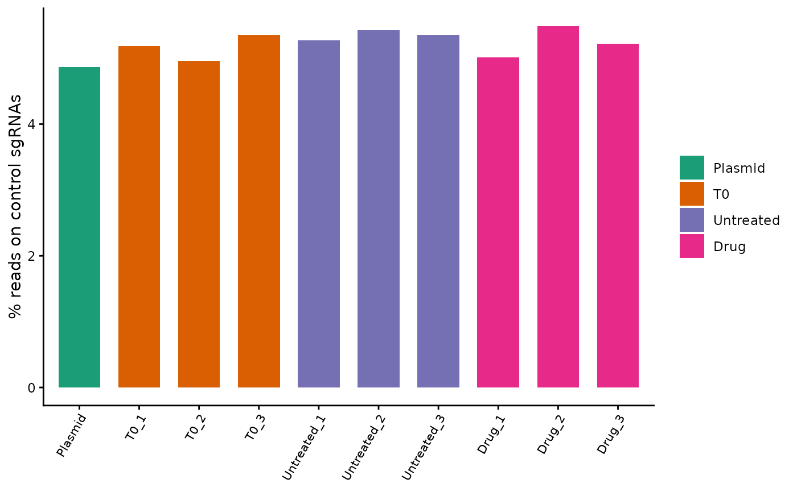
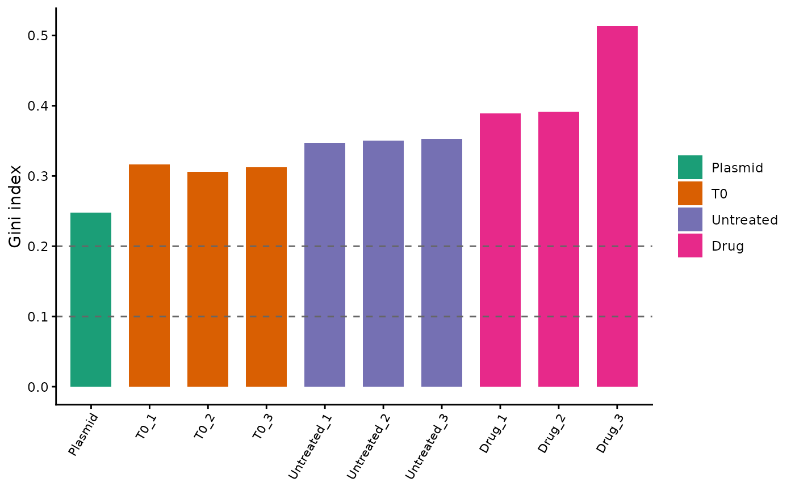

Bar plot of any per-sample metric, e.g. Gini index, zero-count sgRNAs or
percent reads on controls (see qc_sample_stats), with
optional reference lines.
Usage
qc_plot_sample_metric(
df,
meta,
value,
y_label = value,
colour_by = "group",
colours = NULL,
facet_by = NULL,
thresholds = NULL,
value_format = scales::label_number(accuracy = 0.001),
interactive = TRUE,
base_size = 11
)Arguments
- df
Data frame with a
sample_idcolumn and the metric column, e.g. output ofqc_sample_statsor a count summary.- meta
Sample table: data frame with one row per sample and columns
sample_id,label,groupandreplicate(see section 'Sample table'). Only samples inmetaare used.- value
Name of the metric column in
df.- y_label
Y-axis title (default is
value).- colour_by
Name of the column in
metaused to colour samples.- colours
Optional named character vector of colours, with names matching the values of the
colour_bycolumn (e.g.c(Untreated = "#0073C2", Drug = "#CD534C")). If NULL (default), the RColorBrewer "Dark2" palette is used.- facet_by
Optional name of a column in
metaused to split the plot into panels (default is NULL, no panels).- thresholds
Optional numeric vector of y-values drawn as dashed reference lines (e.g.
c(early = 0.1, late = 0.2)for Gini index).- value_format
Function formatting metric values in tooltips (default shows three decimals).
- interactive
Logical; if TRUE (default), return an interactive plotly object, otherwise a ggplot object.
- base_size
Base font size of the plot.
Examples
stats <- qc_sample_stats(exampleCounts, exampleSampleMeta)
qc_plot_sample_metric(stats, exampleSampleMeta, value = "pct_ctrl",
y_label = "% reads on control sgRNAs",
interactive = FALSE)

qc_plot_sample_metric(exampleCountSummary, exampleSampleMeta,
value = "gini_index", y_label = "Gini index",
thresholds = c(0.1, 0.2), interactive = FALSE)
